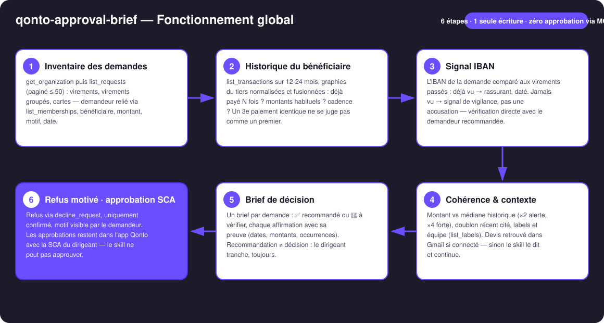
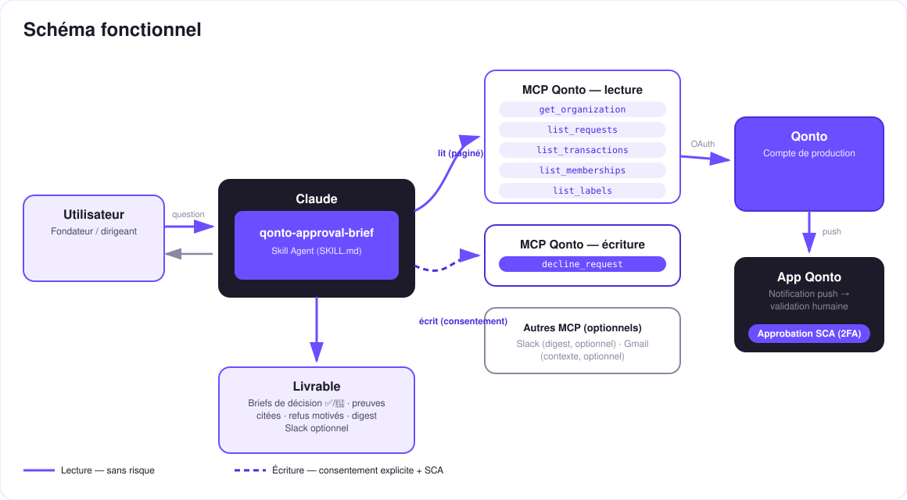

Instruire chaque demande d'équipe comme un DAF — toi seul approuves, dans l'app, sous SCA.
Les demandes de virement et de carte de l'équipe s'empilent dans Qonto — et le dirigeant approuve à l'aveugle, ou avec trois jours de retard. Chaque demande mériterait cinq minutes de fouille ; personne ne les a. Le skill fait le travail d'instruction d'un DAF sur chaque demande en attente :
Déjà payé N fois ? Montants habituels ? Cadence ? Un 3e paiement identique ne se juge pas comme un premier virement.
IBAN déjà vu dans l'historique (rassurant, daté) ou jamais vu — un signal de vigilance, pas une accusation.
Montant vs habitude (×4 → alerte forte), budget/label, devis retrouvé dans Gmail si le MCP est connecté.
✅ recommandé / 🔶 à vérifier, chaque affirmation sourcée — refus motivé via MCP (confirmé), approbations dans l'app avec ta 2FA.
Exemples de lignes de brief (inventés) : « ✅ recommandé : 3e paiement identique à ce prestataire » · « 🔶 vérifier : IBAN jamais vu, montant ×4 l'habitude ».
| Prérequis | Détail | Obligatoire |
|---|---|---|
| Compte Qonto production | Le skill s'adapte à toute organisation — get_organization d'abord, zéro donnée en dur | ✅ |
| Pays | Universel — l'instruction repose sur l'historique du compte, pas sur des règles nationales ; tous les pays Qonto (FR, DE, ES, IT…) | ℹ️ détecté |
| MCP Qonto connecté | Connecteur officiel (claude.ai / Claude Desktop), login OAuth | ✅ |
| Rôle avec revue des demandes | Owner/Admin/Manager : les demandes doivent être visibles — sinon list_requests revient vide et le skill dit pourquoi | ✅ |
| Des demandes en attente | Sinon rien à instruire — le skill le dit et s'arrête proprement | ⭕ |
| Historique ≥ quelques mois | En dessous, tout bénéficiaire paraît « nouveau » — dégradation annoncée | ⭕ |
| Slack · Gmail (MCP optionnels) | Digest et contexte email — détectés dynamiquement, jamais requis | ⭕ |

list_requests vide à cause du rôle → annoncé comme un problème de visibilité, jamais « tout va bien »
Le modèle de sécurité, pas une limitation : la lecture est sans risque ; la seule écriture est un refus motivé, confirmé dans la conversation. L'approbation n'existe pas dans ce skill — approve_request n'est jamais appelé. Approuver = l'app Qonto + ta SCA (2FA). Rien de ce que fait ce skill ne peut déplacer un euro.
| Signal | Vérifié comment | Lecture |
|---|---|---|
| Bénéficiaire connu | list_transactions 12-24 mois, graphies normalisées : N paiements, montants, cadence | ✅ rassurant si stable et daté |
| IBAN jamais vu | Comparé aux IBAN des virements sortants passés | 🔶 vigilance, pas accusation — un nouveau fournisseur est normal, une fois |
| Montant inhabituel | Ratio vs médiane historique du même bénéficiaire | 🔶 ×2 signalé, ×4 alerte forte, les deux chiffres affichés |
| Doublon possible | Même bénéficiaire + même montant payé dans les ~10 derniers jours | 🔶 transaction citée (date, montant) |
| Cohérence budget/label | list_labels + équipe du demandeur | ℹ️ signal doux, jamais décisif seul |
| Contexte email | Devis/échange retrouvé dans Gmail (si MCP connecté) | ℹ️ cité dans le brief (objet, date) |
| Demande de carte | Pas d'IBAN : plafonds demandés vs dépenses carte habituelles | ℹ️ instruction adaptée |
| Sortie | Format | Quand |
|---|---|---|
| Réponse dans la conversation | Tableau des briefs + brief détaillé par demande 🔶 + prochaine étape explicite | Toujours — c'est la base |
| Tableau de bord des briefs | Fichier/artifact HTML : une carte par demande, verdict et preuves | Si l'hôte affiche les fichiers (artifacts claude.ai, Claude Desktop, Claude Code) ; repli automatique sur les tableaux sinon |
| Motif de refus | Texte joint au refus via decline_request, visible par le demandeur dans Qonto | À chaque refus (confirmé) |
| Digest Slack | Résumé des briefs posté sur le canal choisi | Si le MCP Slack est connecté (optionnel) |
La démo ≤ 3 min jointe à la PR suit le storyboard : la pile de demandes → les briefs sourcés → la demande douteuse (IBAN jamais vu, montant ×4) refusée en un mot → les approbations dans l'app Qonto, sous SCA, filmées sur téléphone → wrap-up. Toutes les demandes de la démo sont inventées. Le script détaillé de tournage est conservé en interne (hors dépôt).
| Idée | Effort | Note |
|---|---|---|
| Politique d'approbation apprise (seuils par catégorie/label) | Moyen | Les briefs deviennent « conforme / hors politique » |
Rapprochement facture fournisseur (list_supplier_invoices) | Faible | La demande adossée à sa facture = preuve de plus dans le brief |
| Digest quotidien planifié sur Slack | Faible | Multi-MCP optionnel, détecté dynamiquement |
| Mémoire des vérifications passées | Moyen | Un IBAN vérifié une fois avec le demandeur devient « connu » |
Skills compagnons : qonto-fraud-sentinel (surveille les transactions passées ; ce skill instruit les demandes futures) · qonto-reimburse-batch (crée des demandes groupées — ce skill les instruit ensuite).
approve_request n'est pas utilisé — approuver = app Qonto + ta SCAdecline_request exige request_type: "multi_transfers" (pluriel) · exemples inventés et signalés